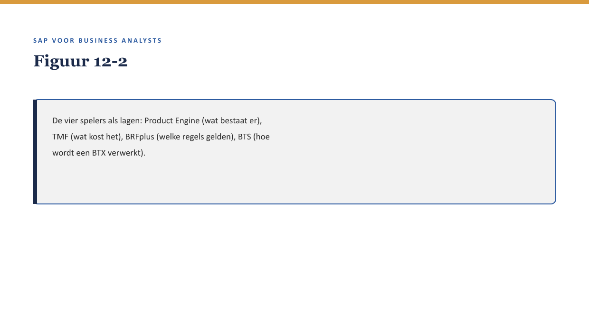

Deel 12 — FS-PM: configuratie en rolverdeling
Slidedeck · Niveau 2 Professional · Cursus SAP voor Business Analysts · Ductus
Slidetypen: titleSlide, sectionSlide, bulletsSlide, statementSlide, quoteSlide, tableSlide, figureSlide, opdrachtSlide.
Slide 1 — titleSlide
FS-PM: configuratie en rolverdeling Deel 12 · Niveau 2 Professional · Cursus SAP voor Business Analysts
Slide 2 — figureSlide

Slide 3 — bulletsSlide
Wat we vandaag doen
- Vier spelers: Product Engine, TMF, BRFplus, BTS
- De schuifbalk opnieuw toegepast
- De historische kortingsregel herzien
- Een nieuwe wens gericht toewijzen
Slide 4 — sectionSlide
Vier spelers
Slide 5 — figureSlide

Slide 6 — tableSlide
Vier lagen
| Speler | Laag |
|---|---|
| Product Engine | wat bestaat er |
| TMF | wat kost het |
| BRFplus | welke regels gelden |
| BTS | hoe wordt een BTX verwerkt |
Slide 7 — opdrachtSlide
Opdracht 12.1 — Welke speler?
Vier situaties, vier spelers.
Slide 8 — quoteSlide
Deze vier namen zijn minder belangrijk om te onthouden dan het patroon erachter. — Kernzin, reader §3.4
Slide 9 — statementSlide
De historische kortingsregel zat in custom code.
Had hij in BRFplus gehoord?
Slide 10 — opdrachtSlide
Opdracht 12.3 — De kortingsregel herzien
Waarom was BRFplus een betere plek geweest?
Slide 11 — opdrachtSlide
Opdracht 12.4 — Marijkes nieuwe wens
Formuleer de gerichte vraag aan Priya.
Slide 12 — bulletsSlide
Samenvatting in vijf zinnen
- Vier spelers: definitie, tarief, regel, verwerking
- Een wens hoort meestal bij precies één speler thuis
- BRFplus ligt doorgaans het dichtst bij customizing, BTS bij development
- De kortingsregel “verdween” doordat hij niet in BRFplus stond
- Met dit vocabulaire stelt een BA een gerichte, geen generieke vraag
Slide 13 — titleSlide
Volgende deel FS-CM: het schadeproces I Deel 13